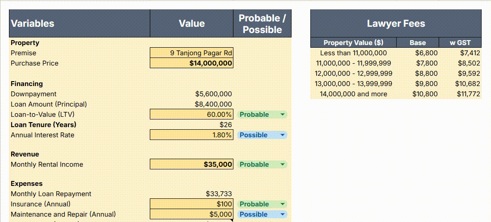
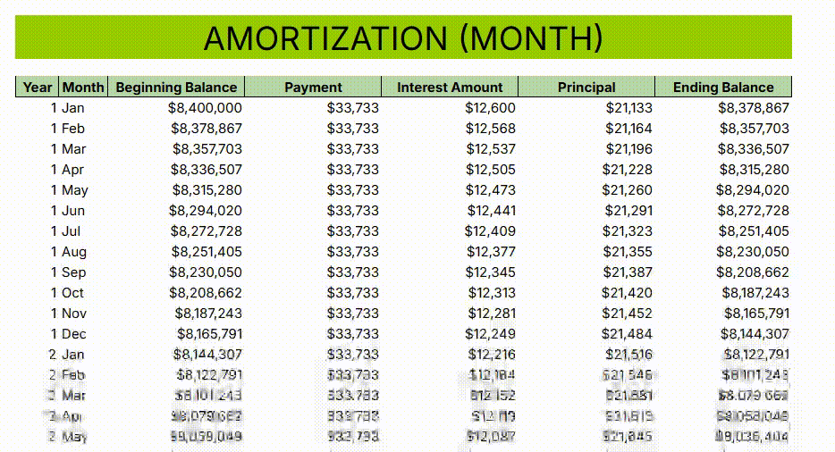
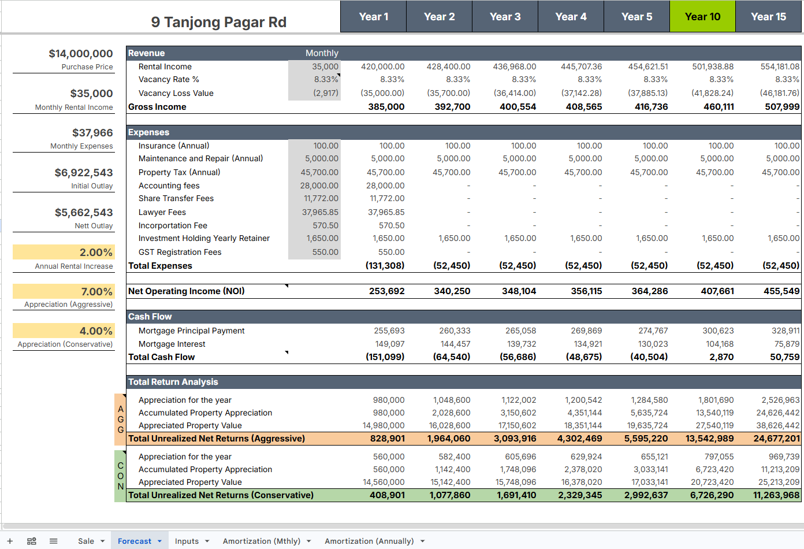
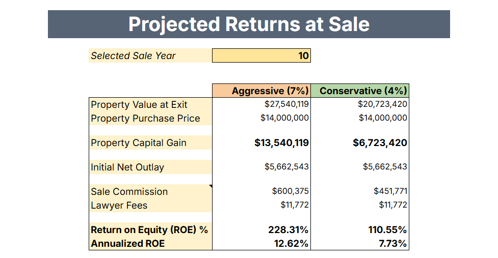

Commercial Real Estate Cash-Flow & ROE% Model
A financial model I built in Google Sheets to evaluate high-value commercial property purchases. Most property brochures only show simple gross rental yield, which hides a ton of holding costs. This sheet factors in mortgage amortization, vacancy buffers, corporate secretary fees, and selling expenses to show true net cash flow and annualized ROE%.
The Impact
Stress-tests capital growth side-by-side on the same dashboard so the buyer can see worst vs. best case returns.
Factors in holding company retainers, realistic vacancy rates, property taxes, and closing fees instead of surface-level yields.
How the Model Flows
Property & Loan Inputs
Enter property price, downpayment, LTV, interest rate, and automatic tiered lawyer fees.
Multi-Year Forecast
Calculates annual cash flow with rental growth, mortgage P&I splits, holding costs, and vacancies.
Exit Year & ROE%
Pick an exit year to calculate broker commissions, exit legal fees, and net annualized return on equity.
1. Property & Financing Dashboard
The main control center where variables and financing numbers get plugged in.

Users enter the purchase price, LTV, loan duration, and expected rent. Legal fees automatically pull from a tiered lookup table based on property value brackets, including local GST.
2. Dynamic Amortization Engine
Splitting monthly debt service into principal reduction and interest expenses.

Tracks debt payoff over time. Because principal payments build equity while interest is a pure cost, the model separates them so the cash-flow forecast stays accurate year after year.
3. Multi-Year Cash-Flow Forecast
Long-term projection factoring in rental increases, vacancy buffers, and maintenance.

A long-range forecast table that models steady rental growth alongside fixed costs like property tax, insurance, corporate secretarial retainers, and planned vacancy buffers.
4. Exit Analysis & Annualized ROE%
Comparing returns across different growth assumptions after paying all exit costs.

The buyer picks an exit year and compares conservative vs. aggressive capital appreciation. The model deducts broker sales commissions and closing fees to show the real annualized Return on Equity.
How It Works Under the Hood
Tiered Legal Fee Lookup
Instead of manually guessing legal fees, an automated table looks up the exact fee bracket based on the property price and applies the correct tax rate.
Holding Company (SPV) Costs
Commercial real estate is often held under a company structure. The model factors in annual corporate secretarial retainers, tax filings, and initial incorporation costs.
Isolating Year-1 Setup Fees
One-time startup costs (like stamp duty, share transfers, and setup legal fees) are kept strictly to Year 1 so they don't distort ongoing annual operational cash flows.
Net Cash Exit Calculation
When calculating capital gains, the model automatically subtracts 2% broker sales fees and exit legal bills so the final ROE% represents actual cash in pocket.